Juniper Books
This studio brought together designs with books and libraries from all walks of life. My clientele consisted of grandmothers to oil moguls, restuarants to big name events. Since it's a small studio, I was able to play with the UI of the website and manage projects, as well as head the email marketing.
Icons
This was a collaborative effort to make a new icon for the brand, which I hand drew. I also created a handful of other icons used for the printed catalog.


Using MailChimp, I created email cmapaigns with the in-house photographer to achieve a classic, yet friendly look to the marketing collateral. This was the primary mode of contact with the customers.


Books and libraries
Designing book covers were the cream of the crop at Juniper Books. Most of my day to day work was managing and proposing client projects, and doing all the production of the physical covers in-house. Juniper Books also sells pre-made sets that I also got to create in a collaborative environment.
 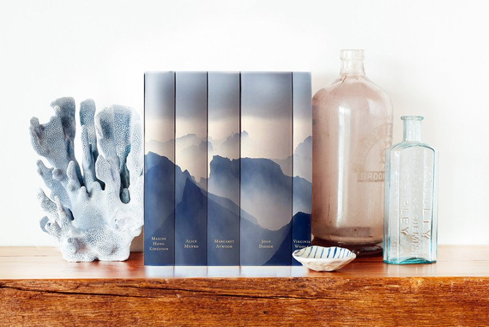
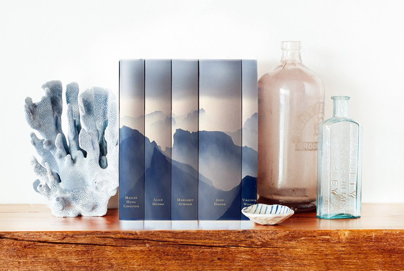
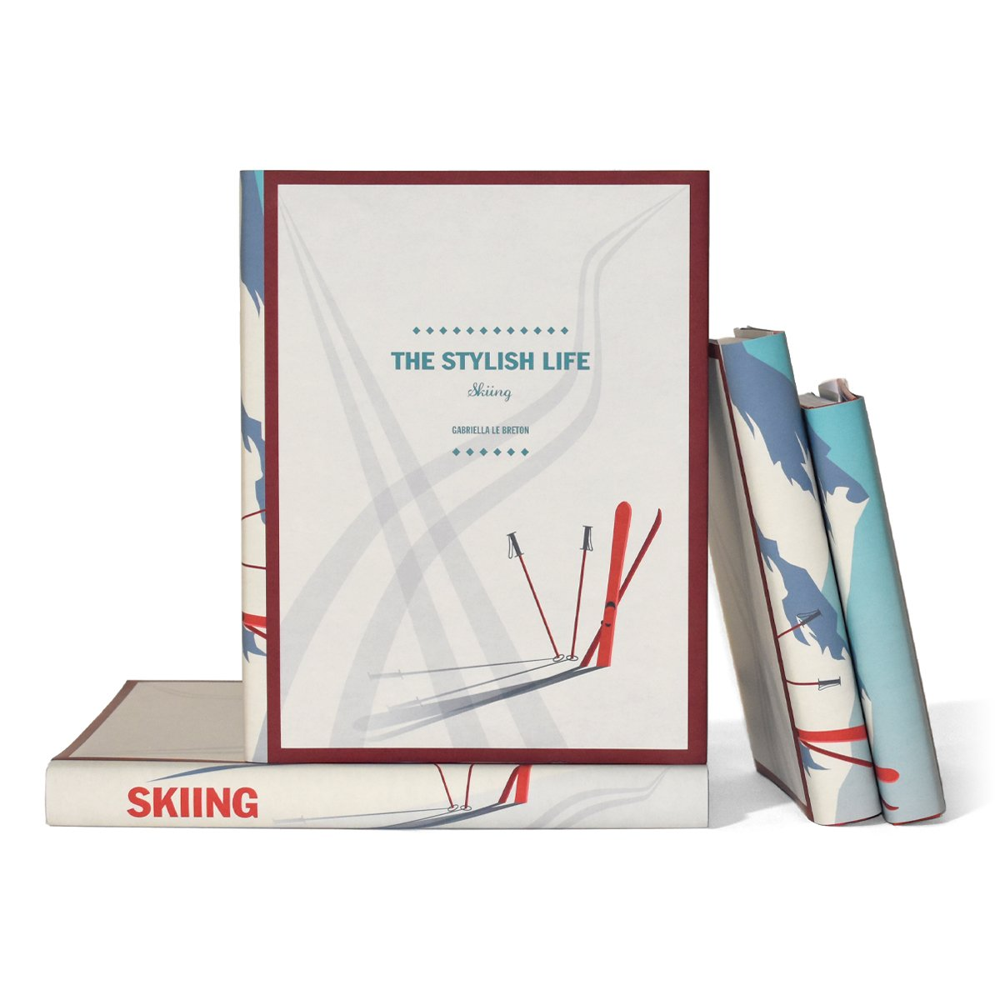


 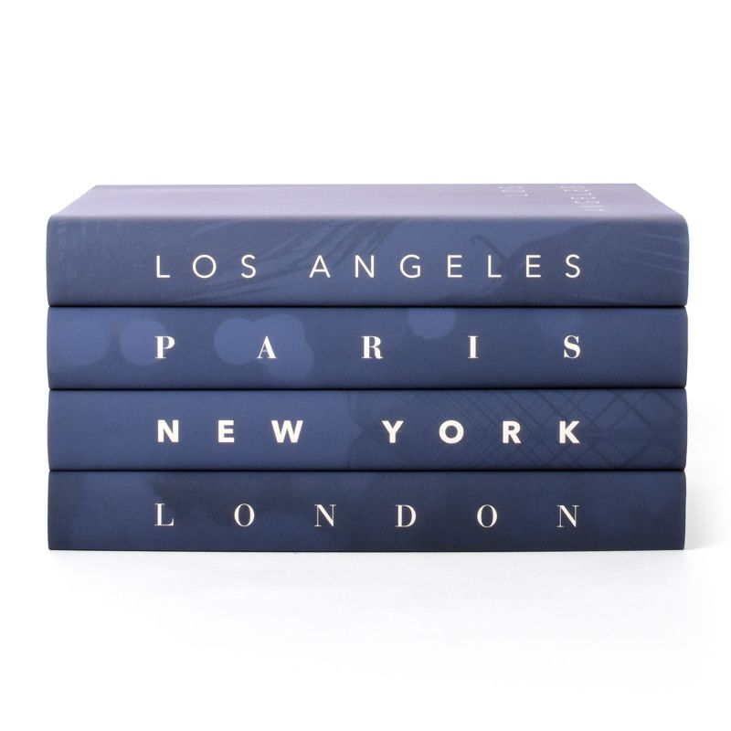
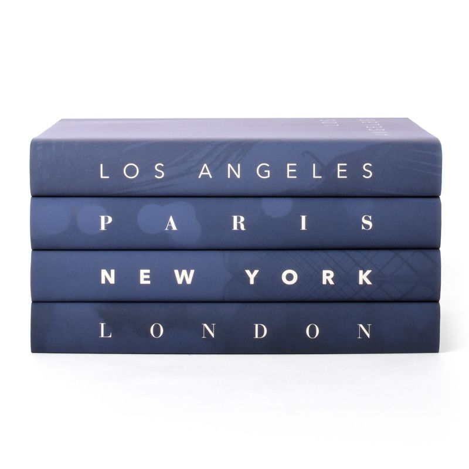

 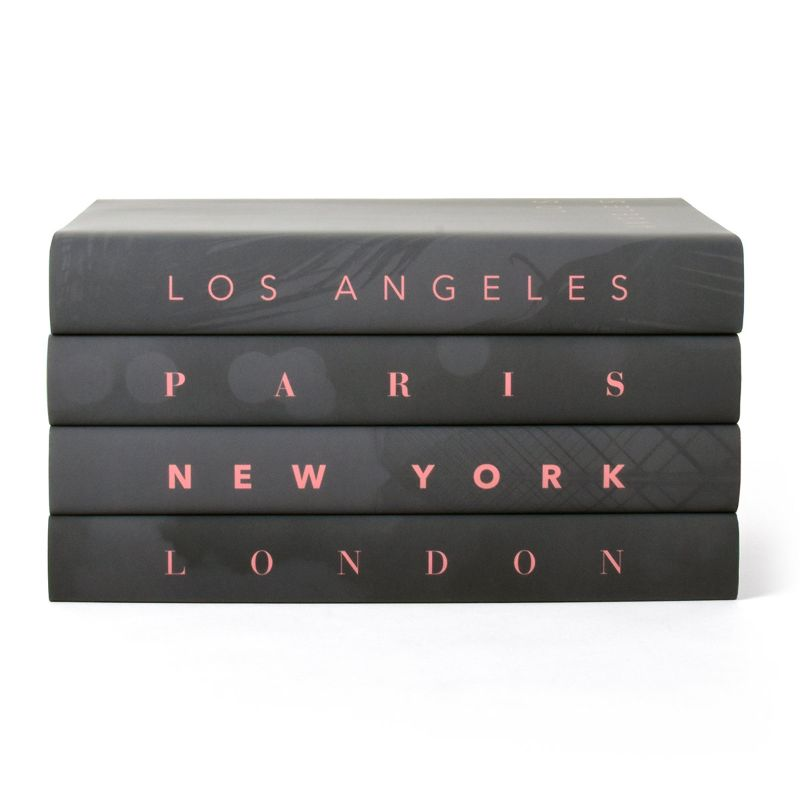
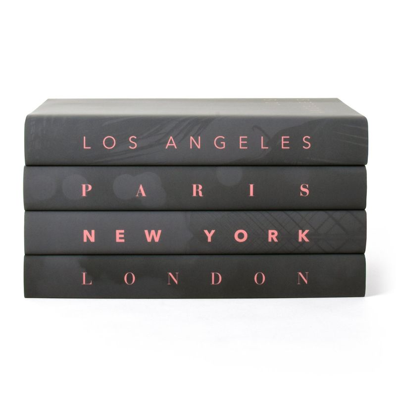
 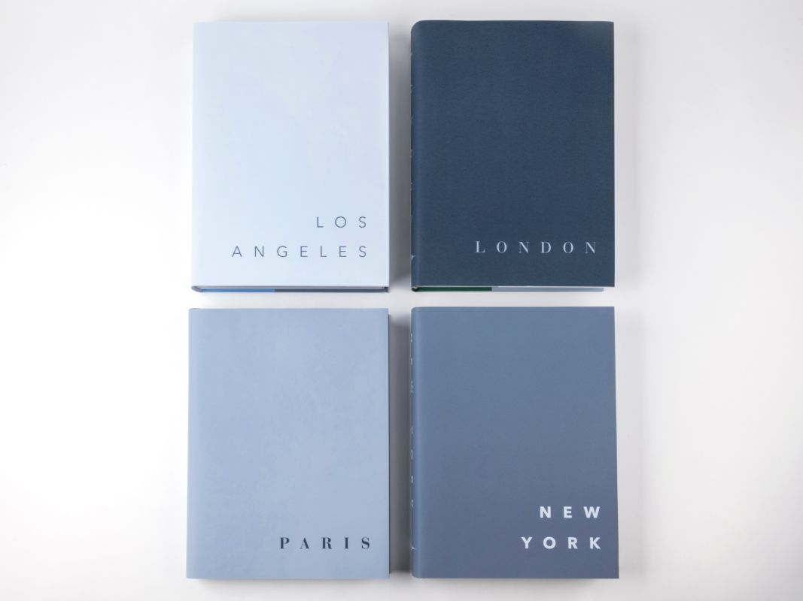
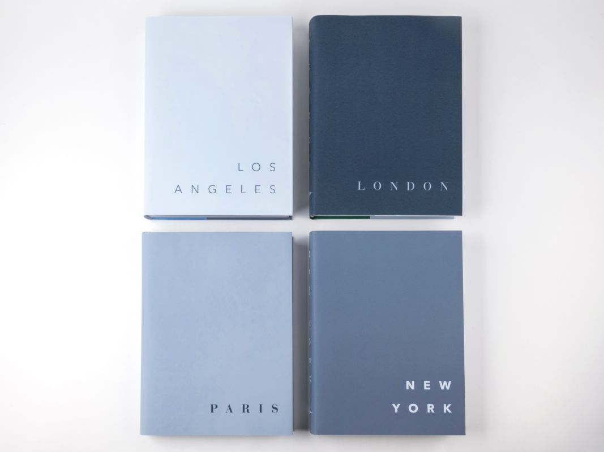


Website headers
Another project in which I collaborated with different photographers to create appealing graphics.
 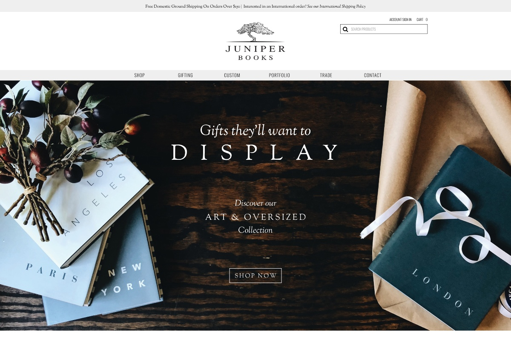
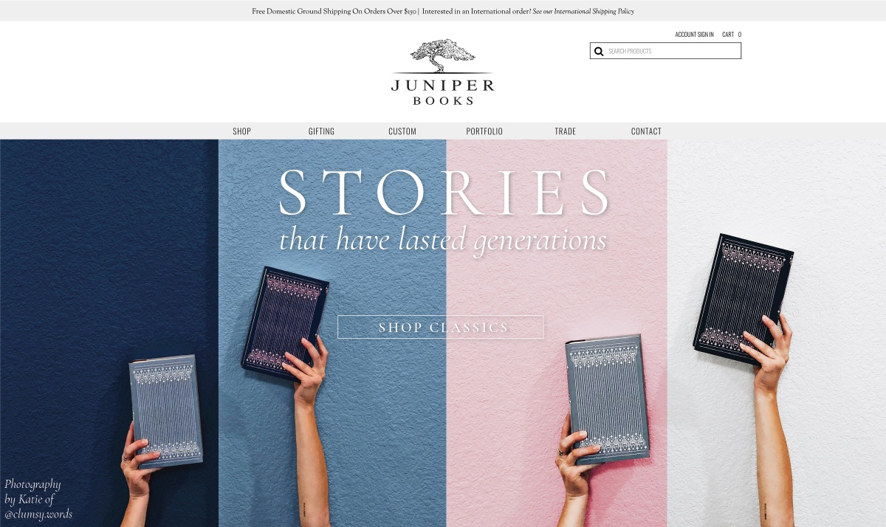
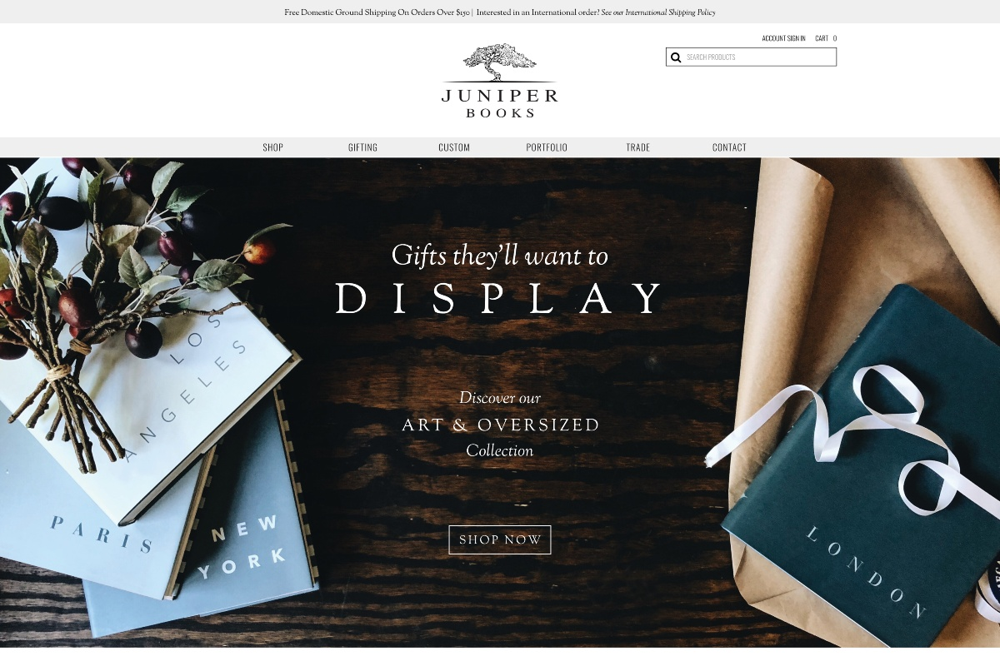
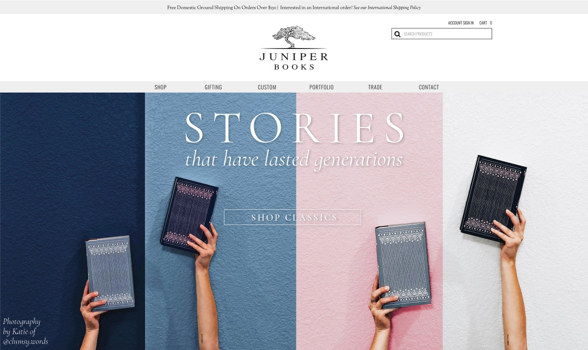


 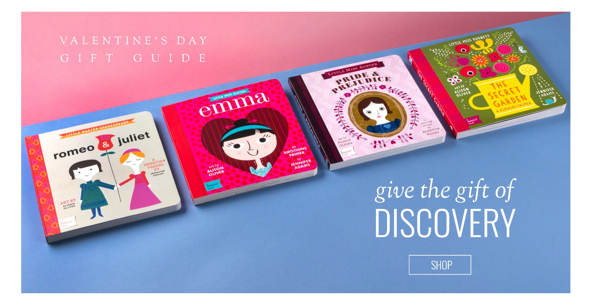
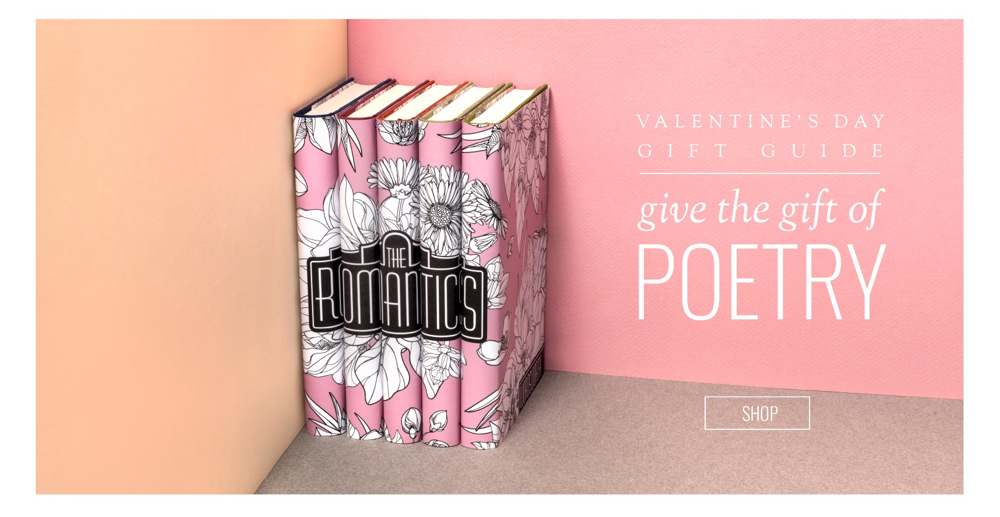
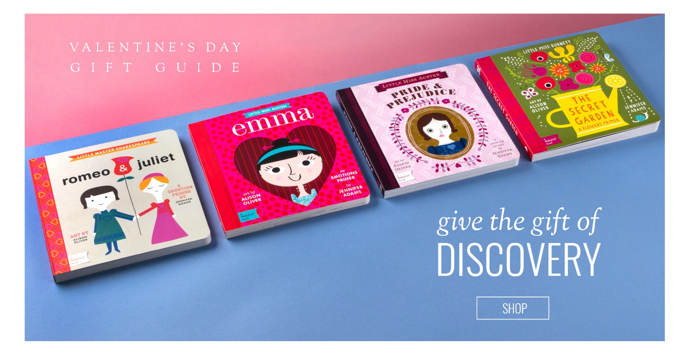
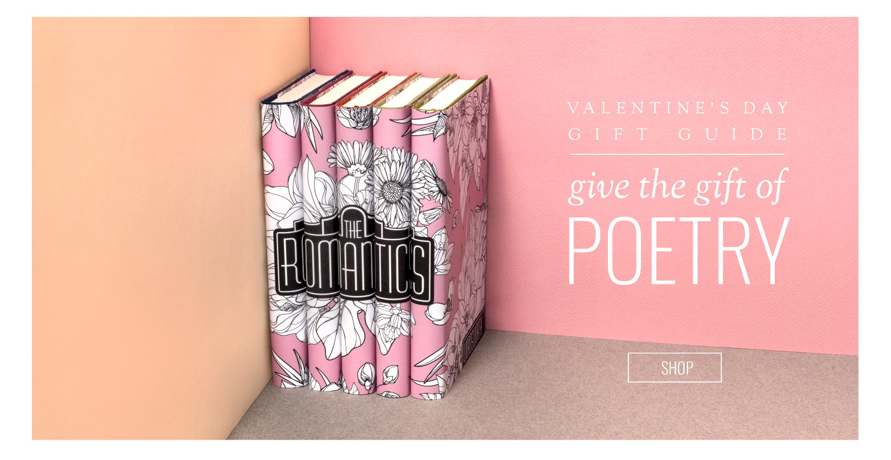